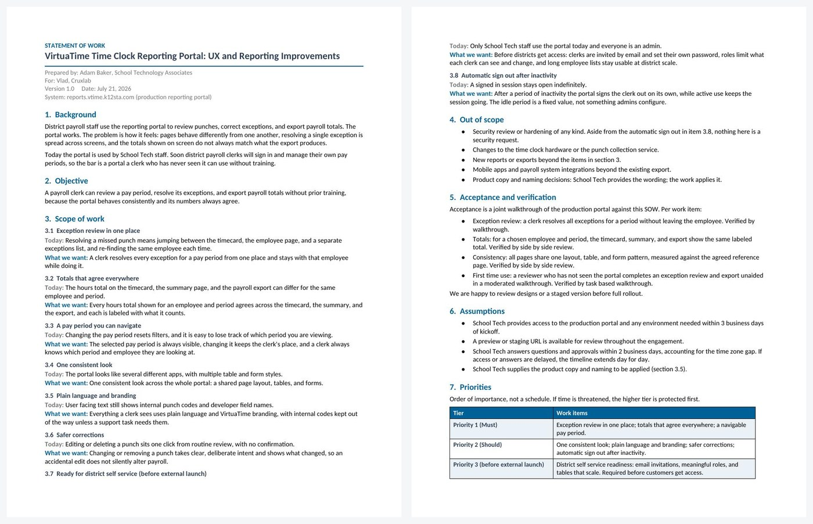
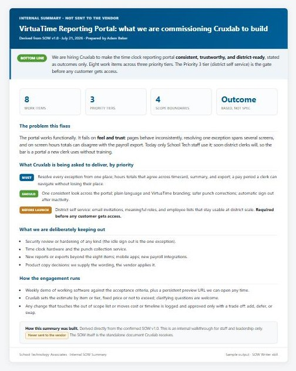

Turns your intent into two things: a standalone, School Tech-branded Statement of Work (.docx) that goes to the dev shop, and a high-level internal HTML summary that walks staff and leadership through what is being commissioned. The whole point of an SOW is to tell a vendor what you want to be true and let their expertise decide how to build it, so the skill holds the line at outcomes and keeps implementation detail out.
Any time you are commissioning an outside dev shop or contractor to build or improve software and need it written up to send them. It triggers even when you do not say "SOW" - "write up what we want Cruxlab to build" is the same request. Not for choosing a vendor (that is Vendor Evaluation), drafting contract or legal terms, or an internal-only spec with no vendor.
"draft an SOW for this build"
"write up what we want the dev shop to build"
"scope this dev work for Cruxlab"

